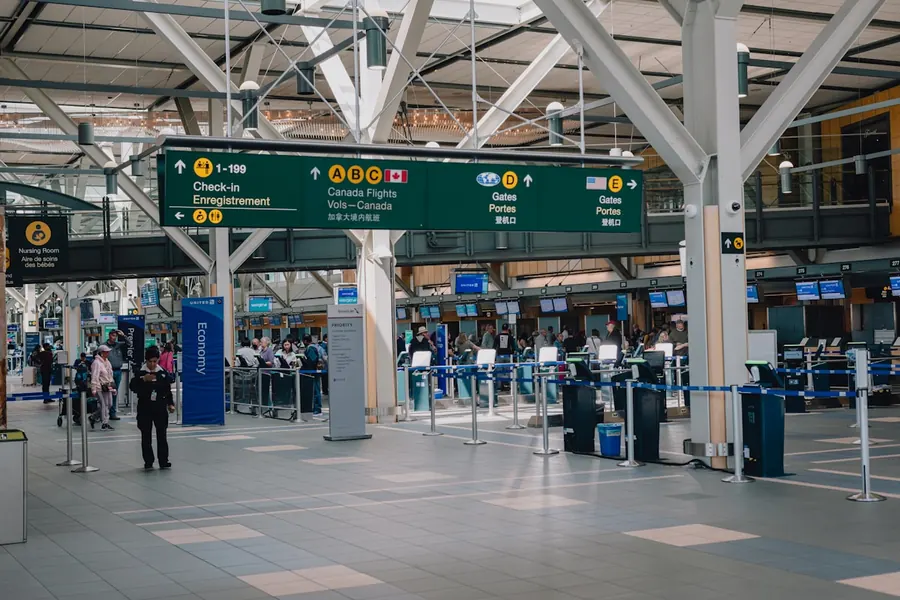

The 2026 FIFA World Cup is the largest sporting event in history — 104 matches across 16 venues, three countries, and 16 cities spread from Vancouver to Mexico City. Whether you're planning a single-city game-day trip or an ambitious multi-country tour, the logistics and costs vary enormously depending on where you go.
This guide covers everything you need to plan your trip: real daily budget estimates, airport guides, hotel planning advice, visa requirements, and transportation options for all 16 host cities. We're a travel planning platform, not a ticket broker — our focus is helping you get there, get around, and stay within your budget.

All 16 Host Cities at a Glance
The 2026 tournament is hosted across the United States (11 cities), Canada (2 cities), and Mexico (3 cities). Here's how every city compares on the metrics that matter most to travelers.
Host Countries at a Glance
Map highlights the 3 host nations. Stadium and city locations are not shown at world-map scale — see city detail below.
Map shows host country outlines only. Stadium addresses, transit options, and daily cost estimates are in the city sections below.
| City | Country | Budget/Day | Mid-Range/Day | Airport | Climate (Jun–Jul) | Visa (US Citizens) |
|---|---|---|---|---|---|---|
| Kansas City | 🇺🇸 USA | $85–$110 | $150–$210 | MCI | Hot, 33°C | None |
| Atlanta | 🇺🇸 USA | $120–$150 | $200–$280 | ATL | Hot, humid, 32°C | None |
| Houston | 🇺🇸 USA | $105–$135 | $180–$250 | IAH | Hot, humid, 36°C | None |
| Dallas | 🇺🇸 USA | $110–$140 | $190–$260 | DFW | Very hot, 38°C | None |
| Seattle | 🇺🇸 USA | $140–$170 | $240–$330 | SEA | Mild, dry, 24°C | None |
| Miami | 🇺🇸 USA | $150–$180 | $280–$380 | MIA | Hot, humid, 32°C | None |
| Los Angeles | 🇺🇸 USA | $160–$200 | $300–$420 | LAX | Warm, dry, 27°C | None |
| New York / NJ | 🇺🇸 USA | $180–$220 | $340–$480 | JFK / EWR | Hot, humid, 30°C | None |
| Boston | 🇺🇸 USA | $140–$175 est. | $240–$330 est. | BOS | Warm, humid, 28°C | None |
| Philadelphia | 🇺🇸 USA | $125–$155 est. | $200–$280 est. | PHL | Hot, humid, 30°C | None |
| SF Bay Area | 🇺🇸 USA | $150–$190 est. | $280–$390 est. | SFO | Mild, 21°C | None |
| Toronto | 🇨🇦 Canada | $95–$120 USD | $170–$230 USD | YYZ | Warm, 27°C | None (eTA others) |
| Vancouver | 🇨🇦 Canada | $103–$135 USD | $192–$260 USD | YVR | Mild, 22°C | None (eTA others) |
| Mexico City | 🇲🇽 Mexico | $55–$75 | $100–$150 | MEX | Mild, 22°C, rain | Tourist card |
| Guadalajara | 🇲🇽 Mexico | $40–$60 | $80–$120 | GDL | Warm, 28°C, rain | Tourist card |
| Monterrey | 🇲🇽 Mexico | $45–$65 | $90–$130 | MTY | Very hot, 35°C | Tourist card |
Use the DreamVacati Tourism Demand Index to see crowd pressure and budget pressure scores for destinations worldwide — useful context as you decide which host city to prioritize.
Check Crowd & Budget Pressure Scores →Eleven US cities are hosting the 2026 World Cup, ranging from the stadium most familiar with mega-events (MetLife, 82,500 seats) to one of the most accessible-by-transit venues in world football (Lumen Field, Seattle). Budget and experience vary significantly between cities.
📍 Atlanta, Georgia
Mercedes-Benz Stadium (71,000) in one of America's best-connected cities. MARTA rail goes directly to the stadium — no rideshare needed on match day. Great food scene and mid-range pricing.
Full Atlanta Guide →📍 Miami, Florida
Hard Rock Stadium in Miami Gardens (65,326 seats). South Beach, Little Havana, and Wynwood add serious destination appeal. One of the more expensive US host cities, especially near the beach.
See Miami Budget Estimates →📍 Dallas, Texas
AT&T Stadium in Arlington (80,000+ seats, largest US venue). The stadium is in Arlington — no direct rail. Rideshare or park-and-ride on match days. Deep Ellum music scene worth your evenings.
See Dallas Budget Estimates →📍 Houston, Texas
NRG Stadium (72,220 seats) accessible by METRORail. NASA Space Center Houston is the unmissable day trip. Montrose and Midtown are excellent food and nightlife neighborhoods.
See Houston Budget Estimates →📍 Los Angeles, California
SoFi Stadium in Inglewood (70,240 seats). LA's Metro is expanding but the city remains car-centric — rideshare dominates. Hollywood, Santa Monica, and Venice add days of activity beyond the match.
See LA Budget Estimates →📍 New York / New Jersey
MetLife Stadium in East Rutherford (82,500 seats — largest in the tournament). NJ Transit runs direct match-day trains from Penn Station (~30 min). Most expensive overall destination in the cluster.
See NYC Budget Estimates →📍 Seattle, Washington
Lumen Field (68,740 seats) is directly accessible via Link Light Rail from SEA-TAC in 35 minutes. Best transit access of any US host city. Pacific Northwest side trips to Mount Rainier and Olympic NP are world-class.
See Seattle Budget Estimates →📍 Kansas City, Missouri
Arrowhead Stadium (76,416 seats) — home of the Chiefs. The most affordable US host city by a clear margin. World-class BBQ, a walkable entertainment district, and no rail to stadium (rideshare is easy and cheap).
See Kansas City Budget Estimates →📍 Boston, Massachusetts
Gillette Stadium in Foxborough (65,878 seats). Commuter rail runs directly from South Station on match days. Boston is one of the most walkable, historically rich host city bases in the tournament — Freedom Trail, Fenway, and world-class seafood all within easy reach.
See Boston Budget Estimates →📍 Philadelphia, Pennsylvania
Lincoln Financial Field (69,796 seats). SEPTA's Broad Street Line provides direct stadium access. Philadelphia's position between New York and Washington, DC makes it a natural multi-city anchor for East Coast-focused World Cup trips. Reading Terminal Market is unmissable.
See Philadelphia Budget Estimates →📍 San Francisco Bay Area, California
Levi's Stadium in Santa Clara (68,500 seats). Caltrain connects San Francisco to the stadium. The Bay Area is one of the more expensive host city markets, but proximity to Napa, wine country, and the Pacific Coast makes it a compelling multi-day destination well beyond match day.
See Bay Area Budget Estimates →Toronto and Vancouver are Canada's two host cities, both offering excellent public transit to their stadiums. Canadian costs translate well for US visitors — the exchange rate typically makes Canada slightly cheaper than equivalent US cities. Most non-US international visitors will need a Canadian eTA (CAD $7, applied for online).
📍 Toronto, Ontario
BMO Field (expanded for the tournament — verify current capacity at FIFA.com). UP Express from Pearson to Union Station takes 25 minutes (CAD $12.35). CN Tower, Kensington Market, and a 90-minute day trip to Niagara Falls make Toronto a complete destination.
See Toronto Budget Estimates →📍 Vancouver, British Columbia
BC Place (54,500 seats). Canada Line SkyTrain from YVR goes directly downtown in 25 minutes — one of the best airport-to-city transit connections of any host city globally. Stanley Park, Whistler day trips, and Gastown add world-class appeal.
See Vancouver Budget Estimates →Mexico's three host cities are the clear value play of the entire tournament. Daily costs run 50–70% lower than equivalent US cities, food quality is world-class, and the cultural depth — pyramids, UNESCO heritage sites, tequila country — is unmatched among host cities. US citizens need only a passport and a tourist card (FMM) at entry; no visa required.
📍 Mexico City (CDMX)
Estadio Azteca — one of the largest and most iconic football stadiums on Earth (tournament seating capacity can vary by configuration). Mexico City Metro is one of the world's cheapest transit systems (~$0.25/ride). Teotihuacán Pyramids, Frida Kahlo Museum, and Roma Norte's food scene are all nearby.
See Mexico City Budget Estimates →📍 Guadalajara
Estadio Akron (49,850 seats). The most affordable host city in the entire tournament. UNESCO tequila country is one hour away, and Tlaquepaque's artisan district is world-renowned. Mariachi culture is genuinely alive here.
See Guadalajara Budget Estimates →📍 Monterrey
Estadio BBVA (53,460 seats) with the Sierra Madre mountains as the backdrop — visually the most dramatic stadium setting of the tournament. Texas-accessible by road (140 miles from Laredo). Cerro de la Silla is a memorable day hike.
See Monterrey Budget Estimates →Travel Budget Overview
The cost range across the 16 host cities is wider than any previous World Cup. A day in Guadalajara costs about the same as an Uber from JFK to MetLife Stadium. Understanding what drives that gap helps you plan realistically.
What drives budget differences between cities:
- Accommodation markup: Match-night hotel prices will surge in every city, but the baseline room rate varies from $40/night in Guadalajara to $250+/night in midtown Manhattan before surge pricing.
- Food index: A full sit-down meal in Mexico City costs $8–$15. The same meal in Miami costs $25–$45.
- Transport: Mexico City Metro costs $0.25/ride. NYC subway is $2.90. Rideshare in Monterrey is $4–$8 per trip; in Los Angeles, $20–$40 for the same distance.
- Activities: Teotihuacán Pyramids admission: ~$5 USD. Universal Studios Hollywood: $119+. Free always beats paid in most Mexican cities.
For a full breakdown with city-by-city comparisons, daily cost estimates for budget, mid-range, and luxury travelers, and money-saving strategies for every type of trip, see our dedicated budget guide.
💰 See the full cost breakdown — all 16 cities compared, budget by traveler type, and money-saving strategies for every budget tier.
Read the Complete 2026 World Cup Budget Guide →Visa & Entry Requirements
Three countries means three entry requirement systems. Here's the summary for the most common traveler types. Always verify current requirements with official embassy or government sources before you travel.
United States
Citizens of 42 Visa Waiver Program countries can enter the USA for up to 90 days under an ESTA (Electronic System for Travel Authorization), applied for online before departure (USD $21). All other international visitors will need a B-2 tourist visa obtained from a US embassy or consulate. US citizens: no action required.
Canada
US citizens can enter Canada with a valid passport — no visa, no eTA required. Citizens of most other countries need a Canadian eTA (Electronic Travel Authorization, CAD $7, applied for online — takes minutes for most applicants). Some nationalities still require a full Canadian tourist visa — check the official IRCC website.
Mexico
US citizens and most Western passport holders can enter Mexico without a visa for stays up to 180 days. You'll be issued a tourist card (FMM — Forma Migratoria Múltiple) upon arrival, either digitally or on paper at the port of entry. Keep it safe — you'll need it when you leave. Ensure your passport is valid for at least 6 months beyond your planned return date.
🌐 Planning a Multi-Country World Cup Trip?
If you're combining USA + Canada or USA + Mexico dates, plan your visa applications well in advance. ESTA applications are typically instant; Canadian eTAs are processed in minutes for most applicants. Mexican tourist cards are issued at entry. No multi-country complications exist for US citizens — just your passport and some planning. See our budget guide for multi-city cost estimates.
DreamVacati Planning Tools
Use these free tools to sharpen your World Cup travel planning before you commit to flights and hotels.
Frequently Asked Questions
Related Articles & City Guides
Ready to Start Planning?
Use DreamVacati's free tools to compare cities, build your budget, and plan your 2026 World Cup trip — no account required.